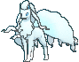

-
Alakazam #065
- Psíquico
Tem um nível incrivelmente alto de inteligência. Alguns dizem que Alakazam se lembra de tudo o que lhe acontece, desde o nascimento até a morte.
-
Dragonair #148
- Dragão
Eles dizem que, se ele emitir uma aura de todo o corpo, o clima começará a mudar instantaneamente.
-
Golem #076
- Rocha
- Chão
Uma vez que ele derrama sua pele, seu corpo fica sensível e esbranquiçado. Sua pele endurece quando é exposta ao ar.
-
Mewtwo #150

- Psíquico
Seu DNA é quase o mesmo de Mew. No entanto, seu tamanho e disposição são muito diferentes.
-
Lapras #131

- Água
- Gelo
Um Pokémon inteligente e de bom coração, ele desliza pela superfície do mar enquanto sua bela canção ecoa ao seu redor.
-
Charizard #006

- Fogo
Ele cospe fogo que é quente o suficiente para derreter pedregulhos. Pode causar incêndios florestais soprando chamas.
-
Ninetales #038
- Fogo
Diz-se que vive 1.000 anos, e cada uma de suas caudas é carregada de poderes sobrenaturais.
-
Wartortle #008

- Água
É reconhecido como um símbolo de longevidade. Se sua concha tem algas, esse Wartortle é muito antigo.
-
Blastoise #009

- Água
Ele esmaga seu inimigo sob seu corpo pesado para causar desmaios. Em uma pitada, ele se retirará dentro de sua concha.
-
Rhydon #112
- Chão
- Rocha
Ele começa a andar em suas patas traseiras após a evolução. Ele pode perfurar buracos através de pedregulhos com seu chifre.
-
Snorlax #143

- Normal
Não está satisfeito, a menos que coma mais de 880 quilos de comida todos os dias. Quando termina de comer, vai logo dormir.
-
Moltres #146

- Fogo
É um dos lendários Pokémon pássaros. Quando Moltres bate suas asas flamejantes, elas brilham com um brilho vermelho deslumbrante.
-
Aerodactyl #142

- Rocha
Este é um Pokémon feroz dos tempos antigos. Aparentemente, mesmo a tecnologia moderna é incapaz de produzir um espécime perfeitamente restaurado.
-
Flareon #136
- Fogo
O ar inalado é levado ao seu saco de chama, aquecido e exalado como fogo que atinge mais de 3.000 graus Fahrenheit.
-
Pikachu #025
- Elétrico
Quando está irritado, ele imediatamente descarrega a energia armazenada nas bolsas em suas bochechas.